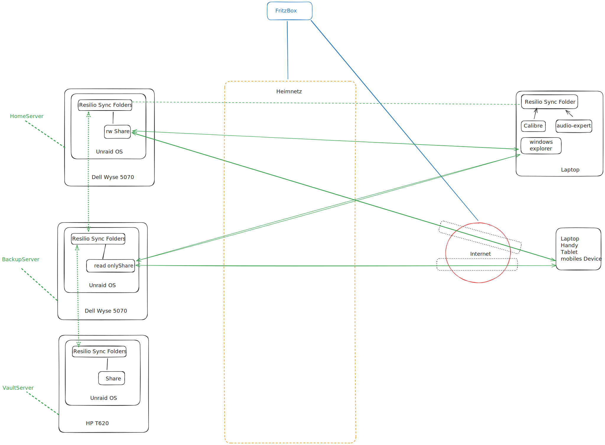

2. Vorwort
Wie wohl jeder von uns habe ich in meinem Leben angefangen Daten anzuhäufen und wollte diese irgendwann endlich digitalisieren und ordnen.
Begonnen hat diese Odyssee mit diversen Raspberry PIs. Letzlich waren es so viele Dinge die ich mit PIs ausprobiert habe, dass es sich irgendwann gelohnt hat die Raspi Garage in Leben zu rufen. Aus dieser Zeit stammt Variante 1 = ein Raspi & eine 6 TB Festplatte mit Resilio Sync drauf. War als Einstieg ganz gut, hat auch die ganzen Jahre funktioniert - war mir aber zu unsicher.
Dann habe ich mich hingesetzt und gefragt wie machen das andere Menschen und bin auf den Begriff NAS gekommen. Da ich eine FritzBox hatte war ein NAS schnell realisiert. Diese Versuche werde ich hier aber gar nicht erst dokumentieren. Die Fritz Box ist ein klasse Router und dafür auch genau das Richtige. Aber als NAS taugt sie mir nicht. Da fehlt die Leistung und dann ging das bei mir auch nur mit WebDAV - das war total langsam. Also keine Option.
Dann habe ich was gelesen von Homeserver statt NAS und schaute neugierig darauf was eigentlich ein Homeserver ist. OK, für die meisten ist ein Homeserver wohl ein teures Gerät mit vielen teuren Festplatten und komplizierter Storagetechnik, genannt RAID irgendwas, und als ich die Preise sah war mir klar, hier bin ich falsch. Allerdings bin ich mir da inzwischen nicht mehr ganz so sicher, denn bei unraid habe ich inzwischen 3 Server und davon 2 mit lifetime Lizenz und einen mit Basic Lizenz. Wenn also die Systeme von Synologie, QNap oder UGreen genommen hätte, hätte ich vermutlich ein besseres System bekommen als jetzt aber das weiß ich nicht, da ich nicht vergleichen kann ohne diese Systeme mal getestet zu haben. Dann gibt es ja auch noch Vertreter wie myCloud, ownCloud, TrueNAS, TerraMaster und Nextcloud. Es war mir einfach zu viel diese alle zu testen und so hab ich recherchiert und fand dieses Video von ct3003 Du willst einen Homeserver (glaub mir) und das hat mich leider überzeugt.
Heute würde ich meiner Naivität folgend, genauso blauäugig es mal mit UGreen probieren. Aber zunächst bin ich mal bei Unraid geblieben - auch weil ich da schon ne Menge Geld versenkt habe.
3. Variante 1 mit Raspi
3.1. Konzept
Die Idee war einfach. Nachdem ich einige Versuche mit resilio Sync unternommen hatte ein paar Verzeichnisse zwischen meinen Laptops, Handies und Tablets zu synchronisieren, wollte ich einen "Master" Server haben gegen den alle Geräte synchronisiert werden.
Der Server brauchte nicht viel Leistung, denn die Synchronisation konnte ja wie bisher direkt zwischen den Geräten erfolgen und er selbst konnte gern langsam alle Änderungen nachziehen. Wichtig war nur wo der korrekte und vollständige Datenbestand zum Schluss liegen sollte - nämlich beim "Master"-Server. Für resiliosync hatte ich eine einfache Lizenz gekauft und zu der Technologie hatte ich Vertrauen,da das bittorrent Protokoll genutzt wurde und es entweder eine Art Nachfolger war oder die Leute welche die Software bereistellten auch schon bittorrent erdacht hatten.
Da keine große Leistung nötig war, suchte ich kurz ob es mit einem Raspi geht und ja es gab schon Lösungen also frisch ans Werk. Raspi aufgesetzt, resilio instaliert und USB Platte dran und fertig. Die Kombi lief über Jahre stabil und ich war zufrieden. Eigentlich hätte ich nix ändern müssen aber mir war nicht klar wie sicher bzw. Auffwändig meine Backupstrategie war. Immer wenn ich dachte, zog ich von der raspi Platte ein Backup und legte es auf einer anderen externen USB Platte ab. Das war auf jeden Fall nicht die sicherste Art. Letztlich war das Backup der Punkt weshalb ich immer am überlegen war, wie ich das sicherer gestalten kann.
3.2. Inhalte
Nur zum Verständnis hier noch einen kurzen Einschub was ich speicherte und wo und dann wie konkret ich meine Backups durchführte.

- ablage-sync
-
Dinge wie eingesannte Verträge von Stromversorgern oder Betriebskostenabrechnungen etc.
- ahnen-sync
-
Urkunden und Nachweise meiner Vorfahren zum Zwecke der Ahnenforschung.
- backup-sync
-
Zwischenspeicher für Backups
- books-sync
-
calibre Bibliothek
- dev-sync
-
bare clone der github repos + sicherungen spezieller software die man nicht mehr bekommt.
- filme-sync
-
Kopien gekaufter Filme und Downloads von youtube Videos
- foto-sync
-
Meine Fotos - ganz wenige, da ich generell flickr als meinen master nutze
- freiebilder-sync
-
Diverse erstellt Diagramme oder Bilder für Entwicklungsprojekte oder Präsentationen
- gramps-sync
-
Sicherung eines Stammbaumes (nicht mehr aktiv in Arbeit)
- input-sync
-
Input Kanal von allen Geräte zur Bearbeitung eingereicht: also TODO Kanal
- käufe
-
Diverse gekaufte Dinge wie amazon mp3 Lieder etc.
- lieder-sync
-
Entwicklungsprojekte mit Noten, midi etc.
- lizenzen-sync
-
Kopien meiner erworbenen Lizenzen
- music-sync
-
audio-expert Bibliothek
- musikvideos-sync
-
youtube Videos von alten Songs der 80er als die Videos gerade aufkamen.
- raspi-sync
-
Images für den raspi
- sylvia-ablage-sync
-
Familie
- sylvia-input
-
Familie
- tsc-private-sync
-
private Drafts und Schreibübungen etc.
- vm-images
-
virtual box images, mit os lizenzen die bezahlt wurden und daher aufgehobenn werden
- zugänge-sync
-
Zertifikate aller Art für den Zugriff auf andere Rechner oder Portale
Auf den mobilen Endgeräten wie Handy oder Tablet habe ich dann meist nur music-sync und input-sync drauf. So kann ich meine Musik auf ein mobiles Device syncen und dort offline abspielen. Hier kommt mir eine Eigenschaft von resilio sync zu Gute: mobile Geräte unterstützen selektives syncen, beim Desktop braucht man eine entsprechende Lizenz dafür.
Auf einem Laptop hatte ich dann zunächst die Musik verwaltet mit audio-expert. Da liegt die ganze Musik dann komplett im Verzeichnis des Laptops. Das nimmt viel Platz ein. Beim nächsten Laptop kam dann noch das Bücherverzeichnis von calibre hinzu. Wenn ich jetzt noch Filme und Videos drauf verwalten wollte dann benötigt es so viel Platz, dass es nicht mehr auf einen Laptop passt. Daher war die Idee ein Laptop für Musik verwalten, ein Laptop für Bücher verwalten. Dann aber hast Du den Laptop für Bücher in der Hand und kaufst bei amazon spontan Musik und schon geht die musik in den input-sync und irgendwann erst setzt Du dich hin und kopierst die Dateien. Das war jedenfalls nicht praktisch.
Mein Wunsch für die Zukunft wäre auch noch alle Filme und Videos mit Plex oder Jellyfin verwalten zu können.
3.3. Backupkonzept
Mein Backup bestand darin, nach individuellem Gefühl mal ein Backup von der Musik, den Videos, den Ahnen oder sonstigem zu ziehen. Man hat ja so in etwa im Gefühl wo im letzten Monat was dazu gekommen ist. Gepeichert habe ich es immer auf externen USB Festplatten. Je Thema eine Platte - damit ist klar, dass da einiges an Platten zusammen kam und der Überblick wieder genauso schnell weg war wie vor dem Ganzen.
Daher suchte ich nach anderen Lösungen und ging in Richtung homeserver.
4. Variante 2 mit einem Thin Client
4.2. Motivation
Nachdem ich erst lange keinen Raspi mehr bekam, weil sie einfach nicht zu haben waren und dann mir lange keinen mehr leisten konnte, weil sie plötzlich so teuer waren, dass ich nicht mehr bereit war das Geld dafür auszugeben, hab ich nach Alternativen gesucht.
So kam ich zum oben verlinkten Artikel von ct3003 über Thin-Clients. Dort hieß es der Dell Wyse 5070 und der HP T620 würden sich auch als Homeserver mit ubuntu und plex eignen und wären auch ein guter raspi Ersatz. Den älteren HP sollte man wohl für 30 Euro bekommen und den Dell für etwa 90 Euro. Spoiler: Der Dell ist leistungstärker als der HP aber vergiss die Kombination unraid/plex oder unraid/jellyfin auf dem Teil.
4.3. Konzept
Was wollte ich? Einen Homeserver, auf dem ich alles sicher ablegen kann und mit dem ich auch Shares im eigenen Heimnetz freigeben kann und zu dem ich auch einfach per vpn vom Handy unterwegs ran komme.
Was hab ich genommen? Den Dell Wyse 5070 Thin Client als Homeserver mit unraid.
Was war der Kompromis? Das Teil hat einen Lüfter und stört beim Schlafen. Braucht also Platz auf dem Balkon, aber dafür spare ich hunderte Euros im Vergleich zur Quelle mit dem lautlosen Mini-Homeserver von AliExpress. Er ist leisstungsstärker als ein Raspi 4 aber nicht stark genug für die Verwaltung und das Streamen von Videos.
Wie funktioniert das Ganze? Also den Zugriff per vpn vom Handy ins Heimnetz hatte ich zufällig schon über meine FritzBox mittels wireguard gelöst. Blieb noch die sichere Speicherung der Daten. Das war der Grund warum ich unraid nahm. Nicht so teuer wie ein echtes Raid System aber durch die Parität auf jeden Fall sicherer als ein Raspi mit einer Platte.
Wichtig: Unraid empfielt ausschließlich S-ATA Platten einzusetzen. Mein Konzept sah aber ausschließlich den Einsatz von mobilen USB Festplatten ohne eigene Stromversorgung vor. Ein solcher Einsatz ist unter Profis hochumstritten!? Nein, nicht wirklich - Profis sagen ganz klar - ist nicht ok ein solcher Einsatz. Hintergrund ist wohl: mobile USB Platten sind nicht dafür gedacht die ganze Zeit zu drehen und wollen sich irgendwann schlafen legen. Wenn sie aber gerade schlafen und unraid will was drauf schreiben, kann das zu Datenverlusten führen, weil nicht alles geschrieben wird.
Warum das Verhalten so ist, in Zeiten von Resilience und bekannten Pattern wie retry, weiß ich nicht aber ich glaube das den Profis einfach mal ohne es groß zu hinterfragen. Und wie immer mache ich es trotzdem, denn ich habe das so noch nicht erlebt und jedes Kind muss halt seine eigene Erfahrung sammeln auch wenn es schon über 50 ist.
Hier mal eine Skizze wie ich mir das System vorgestellt habe:

Auf dem Handy wäre resilio-sync als App installiert und es sollte also das music-sync Verzeichnis dort abliegen. Es sollte nur selektiv synchronisiert werden. Das bedeutet, wenn ich eine Datei antippe wird sie synchronisiert und liegt im Dateisystem des Handies vor. Das ist unabdingbar notwendig, da die Synchronisation des kompletten Ordners der Songs, Hörbücher, Klassik etc. enthält, viel zu groß für das Handy wäre.
Auf dem Laptop würde auch resilio-sync laufen und es wären die Ordner music-sync und books-sync in der Synchronisation eingeschlossen. Das books-sync Verzeichnis wäre die Ablage der calibre Bibliothek und das music-sync Verzeichnis wäre die Ablage der audio-expert Bibliothek. Für Musik und Bücher ist also der Laptop der Eingangskanal über diese beiden Programme. Weiterhin würde über den windows explorer das Share des Homeservers eingebunden werden, somit könnte ich über das Dateisystem des Laptops auch Dokumente und andere Daten direkt auf den Datenbestand des Homeservers schreiben.
Soweit zum Konzept, nachfolgend nun zu den Erfahrungen und Anpassungen.
4.4. Grundlagen Unraid
Hier kurz zum Verständnis wie ich glaube, dass unraid funktioniert. Zunächst muss man einen USB Stick mit einem unraid Image bespielen. Dabei gibt es die erste Hürde, der USB Stick braucht eine GUID (Globally Unique Identfier). Bis dato wußte ich nicht einmal, dass es sowas gibt. Nun aber durfte ich auch lernen, dass nicht jeder USB Stick eine besitzt. Wo keine GUID drauf ist, lässt sich das unraid Image mit dem Installer nicht installieren. Ich vermute, das die GUID notwendig ist um die einzelnen Lizenzen registrieren und zuordnen zu können. Ist aber nur geraten.
Ist das unraid Image einmal auf dem USB Stick aufgespielt, muss man den PC noch dazu bringen von USB zu booten und dann kann es losgehen.
Bei unraid gibt es zwei Möglichkeiten Festplatten zu einer verwalteten Gruppe zu verbinden:
-
Man ordnet die Festplatten einem Array zu - das wäre dann die erste Gruppe.
-
Man ordnet die Festplatten einem Pool zu - das wäre dann die zweite Gruppe.
Eventuell kann man auch mehrere Pools anlegen, womit dann evtl. weitere Gruppen gebildet werden können.
Die Funktion eines Array scheint einfach zu sein. Man kann viele Festplatten zu einem Storage zusammenfassen auf dem dann Daten gespeichert werden können. Man kennt dies auch unter dem Begriff JBOD (Just a Bunch of Disks). Die Daten werden von unraid in Foldern abgelegt wie man das wünscht und nach irgendwelchen Regeln dann irgendwann aufgesplittet und über die Platten verteilt. Der Witz bzw. das Hauptfeature eines Array ist jedoch die Eigenschaft, dass es sich über 1-2 Paritätsplatten absichern lässt. Das ist hier die Verbesserung gegenüber dem Raspi mit einer Platte. So kann eine Platte kaputt gehen. Dann zieht man diese raus und steckt eine neue rein, wartet die Erstellung aus der Parität ab und hat wieder ein funktionierendes System. Das war das Feature was mich überzeugt hatte.
Die Funktion eines Pools ist unklar. Früher hießen die Pools wohl cache und sind wohl auch für so etwas gedacht. Ich habe es so verstanden. Man kann Platten zu einem Cache zusammenschließen. Diese können nicht über eine Paritätsplatte gesichert werden. Für einen Pool verwendet man wohl kleinere Platten als im Array und vorwiegend SSDs, weil die schön schnell sind. Dann konfiguriert man unraid so, dass die Daten in einen Pool geschrieben und gelesen werden. Damit können sich alle Platten im Array schlafen legen, da ja nur auf den Ppol zugegriffen wird. Irgendwann läuft dann ein sogenannter Mover an, welcher die Aufgabe hat die Daten zwischen Pool und Array hin und her zu kopieren. In der Theorie würde man also den ganzen Tag über Daten in den Pool schreiben und auch lesen und irgendwann Nachts, würde der Mover die Daten des Pools mit dem des Arrays in Sync bringen. Wann und wie und nach welchen Vorschriften - keine Ahnung. Die Doku ist in Englisch und wenn ich Dinge exakt wissen muss - hilft mir Englisch nix.
In wieweit ein Ppol gegen Plattenschäden oder fehlerhafte Sektoren gesichert ist, ist unklar. Einige Quellen sagen er wäre sicher aber nicht 100%ig - dann weiß ich aber nicht was dann sicher sein soll. Sektorenschäden können vermutlich die von unraid verwendeten Filsysteme selbständig kompensieren. Eine defekte Platte im Pool bedeutet bestimmt Datenverlust.
Jetzt ein Wort zu den Shares. Bei unraid lassen sich Shares definieren. Ist sowas wie man es vom Samba Share her kennt. Erscheint als Ablage im Netzwerk. Jedem Share lassen sich Platten zuordnen, die es nutzen soll. In dem Share kann man dann seine eigene Ordnerstruktur anlegen. Und hier weiß ich halt nicht wie genau die dann beim größer werden über die zugeordneten Platten verteilt und gesplittet wird. Die Shares können als Freigaben mit Rechten für einzelne Nutzer versehen werden.
Auch lassen sich VMs und Plugins in unraid verwalten. Mit VMs habe ich nix versucht, weil mein ThinClient viel zu schwach dafür wäre. Mit Plugins habe ich mich beschäftigt, da man in der Regel gar nicht ohne auskommt.
Ganz wichtig noch: Unraid sagt, dir Parität ist kein Ersatz für ein Backup. Du bist also auch weiterhin dafür verantwortlich von den in unraid gespeicherten Daten ein Backup zu erstellen. Zu beachten ist, dass Du nun nicht mehr nur von Deinen eigenen Daten ein Backup brauchst, sondern auch noch von der ganzen unraid Konfiguration - das ist teilweise nicht trivial.
Kommen wir jetzt mal auf die Apps und Plugins zu sprechen. Das sind praktisch von der Community entwickelte Feature auf der Basis von Docker Container. Da geht unraid also keine Haftung und keine Arbeit mit ein. Trotzdem kommt man nicht ohne aus - was eigentlich schon frech ist.
Damit man überhaupt Plugins oder Apps installieren und verwalten kann, benötigt man das Community Application Plugin. Da ist unraid als Maintainer eingetragen. Ist es installiert, können weitere Apps installiert werden und je nachdem wie diese Apps gestrickt sind, erscheinen sie unter Plugins oder unter Docker Container oder unter beidem.
4.5. Erfahrungen mit dem Pool
Beim ersten Versuch hab ich einen Pool und ein Array eingerichtet. Der Pool bestand aus 2 Platten und beim ersten initialen Befüllen der Verzeichnisse durch einfaches Kopieren aufs Share bekam ich sofort ständig die Warnung "Die Platte ist gleich voll". Natürlich war die Platte bei weitem nicht voll und es scheint auch nix verloren gegangen zu sein aber es hat mich tiersich verwirrt. Weil meine gebrauchten ThinClients auch noch beim esten Check eine Platte mit Defekten aufwies habe ich mich langfristig gegen einen Pool entschieden. Nachdem ich anfangs auch den ganzen Tag am System konfiguriert hatte und ständig Dinge hin und her kopiert habe und neu gestartet etc. Hatte ich es auch recht schnell geschrottet und habe dann keinen Pool mehr konfiguriert.
4.6. Erfahrungen mit dem Array - der Parity Check
Mein erstes Array bestand aus etwa 4 Platten, mit denen ich dann ein bischen rumspielte. Da lief sofort ein Parity Check los, den wollte ich lieber nicht unterbrechen und so ging es erst nach 24h weiter mit ausprobieren. Ein Parity Check wird von unraid andauernd angestoßen wenn am Array was geändert wird und dabei wird jedes Mal die Parity Platte mit massenweisen Schreib- und Lesezugriffen gestresst. Solange man am Konfigurieren ist, kann man den getrost skippen und später wenn alles konfiguriert ist, einmal komplett laufen lassen. Der Sicherheit halber lasse ich meinen 1x die Woche wieder laufen. Das war für mich ein Kompromiss zu der Frage: Ist es schlimmer eine Weile nicht zu merken, dass eine Platte kaputt ist oder ist es schlimmer ständig einen Parity Check durchzuführen und dadurch die Platte schneller kaputt zu machen? Wie gesagt, der Check läuft bei mir mindestens 12h. Dabei erhitzt sich die Platte teilweise stark. Unraid scheint dann runter zu regeln und die Platte kühlt wieder ein wenig ab. Damit sie kurz darauf wieder eine Hitzewarnung erzeugt.
4.7. Erfahrungen mit den Docker Apps
Die Docker Apps werden von der Community bereitgestellt. Eine App scheint nach einem ersten Blick nur 2 Dinge für Ihre Bereitstellung zu benötigen, ein Image für einen ausführbaren Docker Container sprich ein Dockerfile und ein XML File für die Konfiguration von Default Werten und deren Anpassbarkeit durch den Nutzer.
Bei der Installation werden uns dann die Felder welche im XML File definiert wurden angezeigt, so dass wir deren Werte überschreiben bzw. anpassen können. In der Regel sind das Ports oder Pfade und Namen. Bei Pfaden kann man auch beliebige vorher definierte Shares eintragen. Die Auswahl ist sehr gut gelöst - wenn man erstmal das ungewöhnliche UX Konzept der Nutzeroberfläche halbwegs begriffen hat.
Bei den Pfaden möchte ich auf ein wichtiges Detail hinweisen. Alle Docker Apps werden im System unter /mnt/user/appdata/<id der app> abgelegt. Sprich dort liegen die Konfigurationen in einem Unterverzeichnis und die echten Daten in einem anderen Unterverzeichnis. Die Daten der Shares bzw. Netzwerkfreigaben liegen hingegen unter /mnt/user/<name des share> Der Ordner /mnt/user/appdata ist selbst auch ein Standard Share von unraid, welches aber nach aussen für das Netz per Default nicht freigegeben ist aber freigegeben werden kann. Für jedes Share lassen sich wie oben erwähnt Rechte auf angelegte Nutzer defnieren. Die Granularität entspricht dem chmod Rechten von Linux. Also owner, gruppe, other mit schreiben, lesen, ausführen. Das ganze Konstrukt schafft reichlich Komplexität die ich an meinem Praxisbeispiel kurz beschreiben möchte.
Zunächst habe ich das Community Plugin (keine Docker App) installiert um überhaupt Docker Apps und andere Plugins installieren zu können (Also mein Array hatte ich schon angelegt und in Betrieb, der Parity Check war auch durch).
Jetzt konnte ich die Resilio Docker App installieren. Hierbei hatte ich mehrere "Hersteller" zur Auswahl. Zunächst hatte ich binhex benutzt, bin dann aber später zu linuxserver gewechselt und habe irgendwann auch mal die Version von MAC-CS probiert. Wie auch immer man kann jedenfalls immer den Ordner angeben unter dem die ganzen Folder angelegt werden sollen welche zu synchronisieren sind. Wenn man hier kein Share angibt landet der Ordner automatisch irgendwo unter /mnt/user/appdate/Resilio Sync/sync/folders Das schöne Leerzeichen kommt durch die Default Konfiguration beim App Namen. Darum merke - App Namen sinnvollerweise gleich immer klein schreiben und zusammen ohne Leerzeichen.
Jetzt kann man sich noch einen Nutzer anlegen und das appdata Share für diesen freigeben. public ist bei Windows schlecht das kann Probleme geben. Darum habe ich die Freigabe private für den Nutzer durchgeführt und natürlich read/write weil der Nutzer sollte ja von Windows aus Dateien unter den synchronisierten Ordnern von Resilio einbringen und auch löschen können. Um es kurz zu machen - Pustekuchen - mir war es nicht möglich dort irgendwie vom Windows her schreibend drauf zu zugreifen. Und ja ich kenne mich ausreichend mit Samba, Linux Rechten, Windows Tresor etc. aus. Zumindest haben meine Kenntnisse beim Raspi 4 für die gleiche Aufgabe ausgereicht.
Nach sehr vielen Versuchen habe ich dann ein eigenes Share ablage erstellt. Dieses wird unter /mnt/user/ablage eingehängt und ich kann die Rechte beliebig anpassen. Bei der Reinstallation von Resilio habe ich dieses Share dann als Sync Path eingegeben und nun war es möglich von Windows darauf schreibend zuzugreifen. Manchmal kam es bei Sync Zugriffen dazu, dass die Permissions geändert wurden und der Zugriff dann in Teilen nicht mehr ging. Dies konnte aber stets schnell behoben werden, durch chmod per Oberfläche und dann hatte ich das Problem nicht mehr. Vermutlich nur eine Folge der vielen Versuche gewesen.
Jetzt könnte man denke supi alles gut. Natürlich nicht, denn eigentlich wollte ich ja gar kein eigenes Share sondern alles sollte unter appdata liegen. Das hat Gründe in meinem geplanten Backup. Es gibt ein paar coole Plugins und eins nennt sich Appdata Backup. Das macht genau was der Name sagt es erstellt ein Backup vom appdata Verzeichnis, also von allen Daten der Docker Apps. Solange die Apps keine eigenen Shares nutzen liegen sowohl ihre Konfiguration als auch ihre Daten unter appdata und werden vom Backup schon weggesichert. Nutzt man aber ein eigenes Share, dann liegen die Daten unter dem Share also unter /mnt/user/<name des shares> und werden damit nicht weggesichert. Wenn man das so will ist das ok aber ich wollte das nicht so. Darum gibt es auch später auch noch eine Variante 3.
Also das Plugin Appdata Backup bietet wirklich gute Optionen. Für meinen Fall beispielsweise konfiguriere ich es wie folgt. 1. Stoppe alle Docker Container in einer vorgegebenen Reihenfolge 2. Sichere den appdata Ordner komplett 3. Starte die Docker Container in reverser Reihenfolge 4. Sichere das Flash Image vom USB Stick separat. Das Flash Image scheint mir in sofern sinnvoll, da dort auch teilweise Konfigurationen festgeschrieben werden.
Mein Backup von allen Daten läuft 12 h von daher habe ich strikte Zeitvorgaben wann was vom System durchzuführen ist. Das Appdata Backup Plugin unterstützt meine Wünsche indem es mir eine cron Konfiguration für das Backup anbietet und auch die Ausführung von Shell Skripten vor oder nach bestimmten Schritten erlaubt.
Soweit vielleicht der Stand mit Variante 2. Wir erinnern uns, mit Variante 3 müssen wir nun versuchen auch die Resilio Sync Daten zu sichern, welche ja unter /mnt/user/ablagen (mein Share heißt ablagen) liegen und hier bei Variante 2 nur mit eigenen Shell Skripten gesichert werden können.
5. Variante 3 mit mehreren Thin Clients
5.2. Konzept
Nachdem ich mit Variante 2 gemerkt habe, dass es weiterhin Probleme mit dem Backup gibt und die Berechtigungen auf den Shares auch nicht so einfach zu verwalten waren, hab ich eine neue Variante 3 entworfen.

Die grundlegende Änderung ist, dass ich nun 2 Server mit Resilio Sync bespiele aber jeweils verschieden konfiguriert.
Der Server den ich backupserver nenne, basiert auf einem Array ohne Pools und besitzt nur eine Resilio Sync Installation. Die synchronisierten Folder stellen die Master Folder dar und liegen unter /mnt/user/appdata/resiliosync/sync/folders/. Sie sind damit auch Teil des Backups welches von Appdata Backup durchgeführt und auf einem eigenen Share abgelegt wird. Das Share kann von Windows nur als Read Only Share eingehangen werden. Damit können die einzelnen Backupstände auf mobile USB Festplatten kopiert werden. Verändert oder gelöscht werden können die Backups von Windows aus nicht. Darum kümmert sich Appdata Backup. Es löscht alle Backups die älter sind als 7 Tage, lässt aber die jüngsten 3 immer stehen egal wie alt diese sind. Das Backup ist auch so konfiguriert, dass zunächst alle Container gestoppt werden, dann das Backup erstellt wird und dann die Container wieder gestartet werden. Beim Herunterfahren wird eine evtl. laufende Synchronisation unterbrochen, so dass es nicht zu Inkonsistenzen kommt. Nachdem Backup, wird die Synchronisation dann wie gewohnt fortgesetzt.
Der Server den ich homeserver nenne, auf diesem konfiguriere ich den Pfad der synchronisierten Folder von Resilio auf ein eigens angelegtes Share (/mnt/user/ablagen). Windows Nutzer, können dieses Share Schreibend und Lesend einbinden und es ist nicht Teil der Backupläufe auf dem homeserver. Alle hier im Share liegenden Folder sind synchronisierte Folder vom Backupserver. Damit auch die Konfiguration des homeservers unter /mnt/user/appdata gesichert wird. Läuft auch hier Appdata Backup. Das Backup stopped auch zunächst alle Container, führt dann das Backup durch und startet dann die Container wieder. Die gesicherten Daten selbst schreibt das Backupprogramm in einen Unterordner des synchronisierten Folders backup-sync auf dem von Resiolio benutzten und freigegebenen Share. Die Konfiguration des Backup funktioniert wie beim backupserver: Alles über 7 Tage wird gelöscht außer die jüngsten 3.
Für die Sicherheit meiner Daten reicht mir das zunächst bis hier her. Ich denke die Daten sind aktuell sicher und überleben auch einen Stromausfall bzw. haben einen solchen schon überlebt. Zu diesem Zwecke habe ich auf keinem Server einen Pool eingerichtet. Meinen neuestem Wissenstand nach könnte man dies aber sogar ausfallsicher hinbekommen. Aber das ist vielleicht noch ein Punkt für die Zukunft.
5.3. Erfahrungen und Erweiterungen
Da ich nach einer Weile die Datensicherheit für gut befand und ich meine Passwörter immer noch mit Keypass sicherte und hier schon längst eine bessere Lösung suchte, stellte ich mir noch einen vaultserver hin. Auf dem vaultserver habe ich eine vaultwarden Instanz eingerichtet, auf die ich per Browserplugin zugreifen kann. Alle Daten liegen unter /mnt/home/appdata/vaultwarden. Das Backup des Server führe ich wieder mit Appdata Backup durch. Wie immer werden erst alle Container gestoppt, dann die Daten gesichert und dann die Container wieder gestartet. Die gesicherten Daten werden auf ein eigens erstelltes Share abgelegt. Es werden nur die jüngsten 3 Backups und alles was jünger als 7 Tage ist nicht gelöscht.
Diese gesicherten Daten sollten natürlich auch Teil des großen übergeordneten "Master" Backups auf dem backupserver werden. Sie sollen dort in einen parallellen Ordner zu den Daten der homeserver Konfiguration gesichert werden. Ich muss sie also irgendwie zum backupserver übertragen. Das könnte ich über ein Remote Share welches ich in unraid einhängen kann machen. Aber wenn es Netzwerkprobleme beim Transport gibt, scheitert das Backup. Außerdem muss der Zielrechner an sein und eine asynchrone Speicherung wäre nicht möglich. Daher habe ich mich gegen das einhängen eines Remote Shares vom backupserver entschieden. Stattdessen habe ich auch hier Resilio Sync installiert und das genutzte Backupshare als synchronisierten Folder Pfad angegeben. Schon war das Problem gelöst. Jetzt kann der Transport der Daten asynchron immer dann passieren, wenn es gerade möglich ist.
5.4. Fazit Variante 3
Was ziehe ich für ein Fazit? Bin ich zufrieder mit der Lösung? Allgemein bin ich sehr zufrieden aber es gibt immer wieder Punkte über die ich nachdenke und bei denen ich meine, sie weiter verbessern zu müssen.
-
Jedes Backup ist nur so gut wie sein Restore. Darum habe ich mir einen Laptop geschnappt das Backupverzeichnis eingehangen und versucht das aktuelle Backup zu entpacken. Remote geht nicht. Erst lokal kopieren - ok dann wird der Platz auf der Platte schon extrem eng. Jetzt entpacken - zu wenig Platz auf dem gesamten Laptop. Öffnen und einen bestimmten Ordner später zum Entpacken selektieren wollen - dauert ewig beim Öffnen und scheitert dann mit zu wenig Platz (vermutlich wird hier einfach auch erst komplett auf Platte entpackt). Also separate mobile USB Platte rangestöpselt, das Backup drauf kopiert und dort entpackt - voila geht. Ich komme an alle Daten ran und könnte diese wieder einspielen. Das ist verbesserungswürdig - wie weiß ich noch nicht. Aber Daten wie jpeg oder mp4, die schon gepackt sind brauchen nicht nochmal gepackt werden. Das riesen Zip hab ich eigentlich nur, damit der Tranport übers Netz schneller geht und bei einem FAT Zielsystem mir nicht gleich tausende Pfadwarnungen ala "zu lang" um die Ohren fliegen. Wenn das dann beim Entpacken passieren sollte, hab ich die Durststrecke Netzwerk schon mal hinter mir und kann weiter kopieren auf eine andere Platte mit ntfs oder so. Ziel ist vielleicht statt zip ein tar zu erstellen, mal schauen ob das mit Appdata Backup machbar ist.
-
Das Aufsetzen einer vaultwarden Instanz auf einem weiteren Thin Client aus einem Backup, hab ich ausprobiert nach Anleitung im Netz und hat super funktioniert.
-
Die Server sind sehr schwach und besitzen Lüfter, machen also leise Geräusche. Der HP T620 geht gerade noch als vaultserver, den würde ich aber zukünftig nicht wieder kaufen - viel zu schwach. Eine Lösung aus 3 Wyse wäre gut gewesen. Trotzdem ohne Lüfter und mehr Speicher wäre auch cool.
-
Mir fehlt immer noch eine Lösung für jellyfin - da brauch ich aber einen leistungsstarken Server. Mal schauen und sparen.
-
Ich verwende nur USB Platten und habe beobachtet, dass die bei mir durchlaufen. Die legen sich nie schlafen obgleich da nur an einigen Tagen was zu tun ist. Da muss ich die Konfiguration nochmal prüfen. Andererseits, habe ich dadurch auch vielleicht bisher nicht die Probleme vor die alle Welt immer warnt. Es heißt immer, nimm keine USB Platten. Unraid leistet auch keinen Support sowie USB Platten im Spiel sind. Außerdem scheint der Unraid Support den Satz "Kein Backup, kein Mitleid" sehr ernst zu nehmen.
-
Ich würde zukünftig ger mal mehr mit einem Pool rumspielen. Zumal ich jetzt verstanden habe, dass man den mit zfs wohl ausfallsicher hinbekommt.
-
Ich habe eine strikte Zeitvorgabe eingerichtet für automatische Tasks. Backup Homeserver 00:15 Montags, Backup vaultserver 00:15 Dienstags. Backup backupserver 00:15 Donnerstag. Damit ist das WE Backupfrei und ich kann ungehindert basteln.
-
Backup und Perity Check. Zwischen einem Backup und einem Parity Check lasse ich bisher immer mindestens 48 h. Die beiden Dinge dauern teilweise extrem lange und ich möchte nicht, dass beide Prozesse zufällig zeitgleich laufen.
-
Die Parity Platten werden bei unraid am meisten belastet, gleichzeitig sind das auch die teuersten weil am größten und idealwerweise auch am schnellsten. Immer ein Auge drauf halten und beim Ausfall schnell wechseln. Bei mir leben sie aber noch alle.
-
Ein Wort zu Updates und Upgrades. Ich habe das Backup so eingestellt, dass es automatisch vor dem Starten der Container noch Updates einspielt. Diese Updates beziehen sich aber nur auf die Docker Apps. Die Plugins spiele ich selber ein. Hier warte ich immer erst eine Woche ab und dann spiele ich sie ein. Bisher keine Probleme. Das Upgrade von unraid ist ein wichtiger Punkt. Dazu nehme ich mir Zeit. Das Teil lasse ich mindestens eine Woche veröffentlicht sein und dann lese ich die Release Logs auch ganz genau. Meine Erfahrung sagt mir das ist wichtig. Von 6.5 auf 7.0 hatte ich was falsch gemacht und das Upgrade hatte sich aufgehangen. Neu booten hat geholfen aber das ist riskant. Lieber exakt nach Anweisung vorgehen.
-
Platten wechseln. Geht unproblematisch sofern die neue Platte gleich groß oder gößer ist. Danach läuft der Parity Check wieder los und veruscht den Inhalt der neuen Platte aus der Parität herzustellen.
-
Eine Platte die ich aus einem Array entfernt hatte weil ich sie an meinem Laptop anstecken wollte und mal kurz alle Daten kopieren wollte (direkt per USB und nicht übers Netz) lies sich nicht lesen. Die Platten werden von Windows gar nicht erkannt. Als ob sie nicht formatiert sind. Ich habe eine Weile gebraucht um zu schnallen, dass das am Filesystem liegt, für das mein Windows vermutlich keine Treiber installiert hat. Unter unraid konnte ich die Platte wieder super auslesen. Für solche Sachen hilft übrigens das Unassigned Device Plugin.